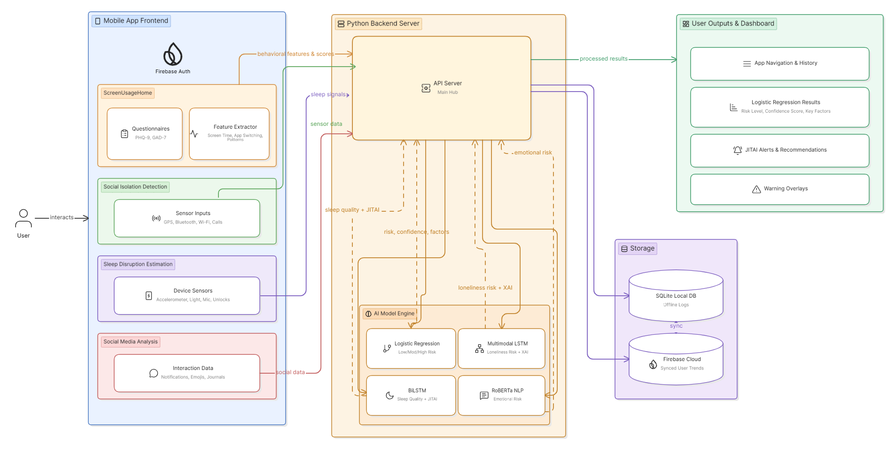
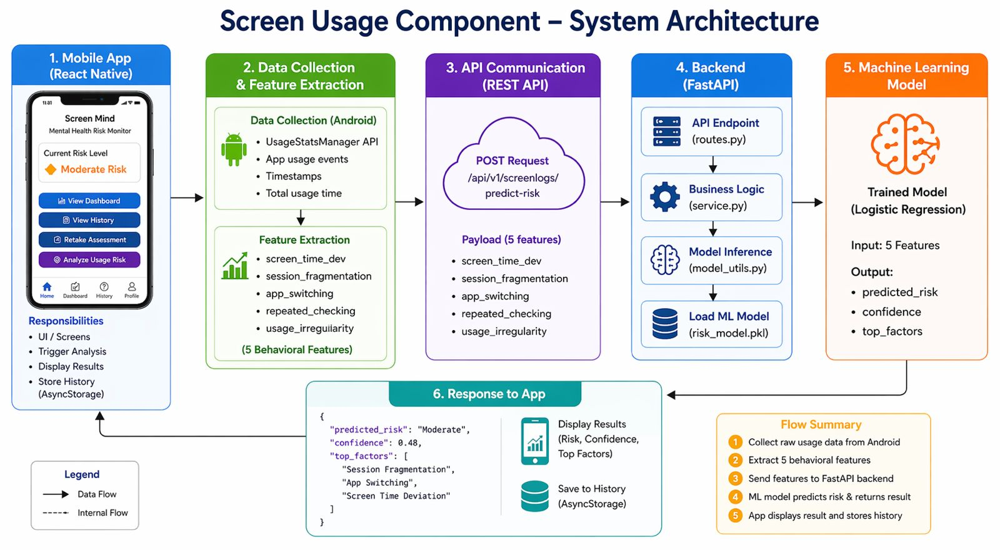
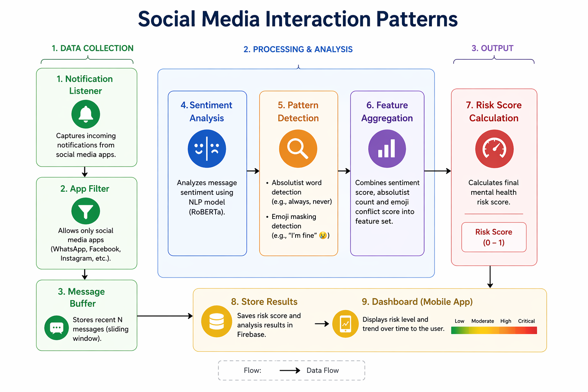
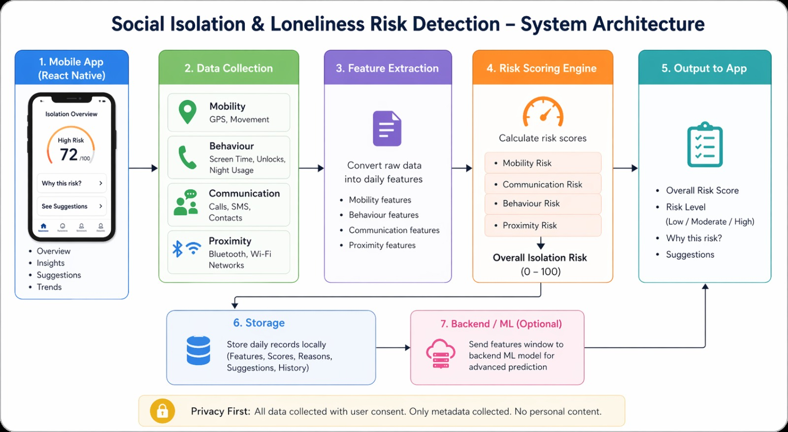
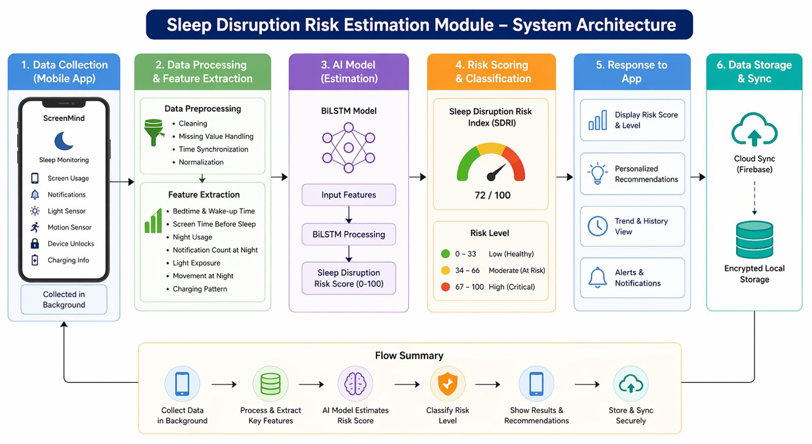

Research Problem
The project investigates how smartphone behavior, sleep-related data, communication signals, and screen usage patterns can be analyzed with AI to detect early mental health risks.
Digital Phenotyping for Early Intervention
ScreenMind is an AI-powered system designed to detect mental health risks using smartphone usage patterns, sleep behavior, and social interaction analysis.
Core Modules
Driven System
Monitoring
Project Scope
ScreenMind addresses the growing mental health impact of excessive smartphone use through an integrated AI-based detection and early intervention platform.
Smartphones and social media are deeply embedded in daily life, but excessive usage is strongly linked to stress, anxiety, depression, poor sleep, and reduced focus.
ScreenMind addresses this gap through a multi-module system that combines smartphone sensing, AI-based behavioral analysis, explainable results, and preventive support.
The project investigates how smartphone behavior, sleep-related data, communication signals, and screen usage patterns can be analyzed with AI to detect early mental health risks.
Current systems mainly focus on usage statistics, self-reporting, or isolated data sources. They lack holistic, real-time, privacy-aware, and explainable solutions.
The methodology combines passive smartphone sensing, local feature extraction, AI/ML-based analysis, risk scoring, explainable results, and actionable interventions.
System Overview
Explore the major diagrams and planning visuals of the ScreenMind research project. Click any diagram on the right to preview it in the main display area.

The platform combines smartphone sensing, feature extraction, AI-based prediction, and explainable result delivery into one connected mobile-first system.
Key Features
The system is composed of four intelligent modules that work together to analyze behavior, detect risks, and provide actionable insights.

Module 01Uses screen usage logs and behavioral patterns to estimate mental health risk levels using trained machine learning models.

Module 02Analyzes interaction patterns and sentiment signals from social platforms to identify early signs of distress.

Module 03Detects reduced communication, mobility, and engagement patterns to identify possible social isolation risks.

Module 04Estimates sleep quality and disruption risks using smartphone usage at night and device interaction signals.
Milestones
The ScreenMind research project is evaluated through several academic milestones, each focusing on progress, implementation, documentation, and presentation quality.
Downloads
Access project-related files through organized download categories.
About Us
ScreenMind is developed by an undergraduate research team focused on applying AI and digital phenotyping to support mental health awareness and early preventive care.
Senior Lecturer
Department of Information Technology
Faculty of Computing, SLIIT
Assistant Lecturer
Department of Information Technology
Faculty of Computing, SLIIT
Contact Us
For project inquiries, academic communication, or collaboration-related discussions, feel free to contact the ScreenMind research team.